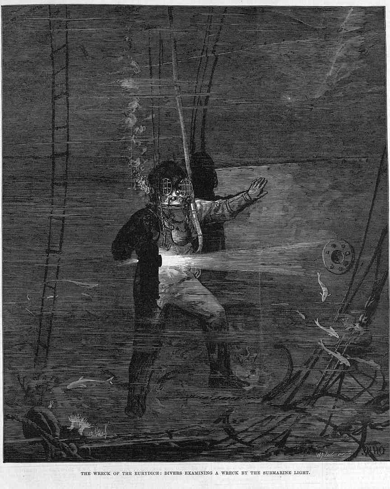

IMAGES
IMAGES¶
https://www.bonhams.com/auction/27248/lot/13/a-model-of-the-frigate-hms-eurydice-40in-x-195in-x-315in-102cm-x-50cm-x-80cm/ Bonhams Auctioneers A Model of the Frigate HMS ‘Eurydice’, English, 40in x 19.5in x 31.5in (102cm x 50cm x 80cm) THE MARINE SALE 27 April 2022, 14:00 BST London, Knightsbridge £800 - £1,200
A Model of the Frigate HMS ‘Eurydice’, English, the hull of carved and hollowed timber painted black to the waterline, a white port-line pierced for brass cannon, and copper below, with wooden spars and accurate running and standing rigging, the model mounted on crutches in a glazed display case, 40in x 19.5in x 31.5in (102cm x 50cm x 80cm) Footnotes The 26-gun, three-masted HMS ‘Eurydice’ launched on 16 May 1843, sailing the North American and West Indies station on its original commission. The vessel was recommissioned three further times in 1846, 1854, and 1877, eventually as a training ship. On 24 March 1878, strong winds off the Isle of Wight led to a foundering which saw all but two of the crew perish.
The present model faithfully recreates the timber deck with inscribed plank lines, and detailed fittings including anchor & cables, bitts, ship’s boats on chocks, capstan, gratings, companionway, wheel, binnacle, and hammocks in place in the nettings.

William Howard Yorke - HMS ‘Eurydice’ at Sea - RMG, signed ‘W Yorke Lpool 1871’.
 HMS Warspite
HMS Warspite
 HMS Eurydice at St Lucia before her last voyage home, 1878 1878
Albumen print | 14.5 x 21.5 cm (image) | RCIN 2580515
Photograph of sailing ship surrounded by small boats, off St Lucia; tree covered cliffs
Provenance
Album compiled by the Reverend J N Dalton (1839-1931) and presented to King George V
https://www.rct.uk/collection/2580515/hms-eurydice-at-st-lucia-before-her-last-voyage-home-1878
HMS Eurydice at St Lucia before her last voyage home, 1878 1878
Albumen print | 14.5 x 21.5 cm (image) | RCIN 2580515
Photograph of sailing ship surrounded by small boats, off St Lucia; tree covered cliffs
Provenance
Album compiled by the Reverend J N Dalton (1839-1931) and presented to King George V
https://www.rct.uk/collection/2580515/hms-eurydice-at-st-lucia-before-her-last-voyage-home-1878
H.M.S. Eurydice, in The Last Four Days of the “Eurydice”, by Captain E. H. Verney, R.N.
Inboard profile plan for HMS ‘Eurydice’ (1843) https://prints.rmg.co.uk/collections/ship-plans/products/inboard-profile-plan-for-hms-eurydice-1843-j6247
Example of sail names for a three masted sailing ship
 Hall map IW ~1850?
Hall map IW ~1850?
WIght map 1885ish?
 The Isle of Wight, AW Fowles, 1897
http://www.bl.uk/onlinegallery/onlineex/maps/uk/004956958.html
The Isle of Wight, AW Fowles, 1897
http://www.bl.uk/onlinegallery/onlineex/maps/uk/004956958.html
 The Isle of Wight, AW Fowles, 1897 annotated
The Isle of Wight, AW Fowles, 1897 annotated
http://www.bl.uk/onlinegallery/onlineex/ordsurvdraw/s/002osd00000027au00421000.html This plan of Chine Head shows the southern cliffs of the Isle of Wight and the downland behind Ventnor. The drawing is made on rectangular sheet lines, enclosed by a black border. Fields are coloured brown where cultivated, and green or blank if untilled. Coniferous trees are distinguished pictorially from deciduous trees on this map. Draughtsman: [Gardner, William] Medium: Pen and ink on paper Date: 1793
http://www.bl.uk/onlinegallery/onlineex/kinggeorge/v/003ktop00000015u02700000.html
Medium: Aquatint, coloured
Date: 1800
View of Dunnose on the south eastern coast of the Isle of Wight. Dunnose is located in an area known as the Undercliff. This area is protected by the peaks of the Downs and has a notably milder climate than much of the rest of the island. Dunnose is one of the highest points on the island with some peaks reaching a height of 792 feet. The rocks around Dunnose Point are extremely dangerous and it was here that in 1878 the HMS Eurydice sank claiming over 350 lives.

http://www.bl.uk/onlinegallery/onlineex/ordsurvdraw/s/002osd00000027au00422000.html This plan of the Isle of Wight extends from Sandown Bay, at the bottom right, to Haven Street, at the top. The drawing is made on rectangular sheet lines, enclosed by a black border. Fields are coloured brown where cultivated, and green or blank if untilled. Stonework buildings or structures are drawn in red ink at major settlements like Newchurch and Brading. Infilled or blocked areas of black or sepia ink depict structures or buildings made from impermanent materials such as wood. Coniferous trees are distinguished pictorially from deciduous trees on this map. Draughtsman: [Gardner, William] Medium: Pen and ink on paper Date: 1793
https://www.oldmapsonline.org/en/Isle_of_Wight
https://maps.nls.uk/view/101169209
OS
Sheet 345 - Ventnor (Hills)
Publication date: 1895
Size: map 31 x 46 cm (ca. 12 x 18 inches) on sheet ca. 43 x 56 cm (ca. 17 x 22 inches)
https://maps.nls.uk/view/102343218 Hampshire & Isle of Wight Sheet XCIX Surveyed: 1862 to 1863, Published: 1866 Size: map 61 x 92 cm (ca. 24 x 36 inches), on sheet ca. 70 x 100 cm (28 x 40 inches)
View of Dunnose from the Cliff near Shanklin in Sandown Bay, Isle of Wight http://www.bl.uk/onlinegallery/onlineex/kinggeorge/v/003ktop00000015u02700000.html View of Dunnose on the south eastern coast of the Isle of Wight. Dunnose is located in an area known as the Undercliff. This area is protected by the peaks of the Downs and has a notably milder climate than much of the rest of the island. Dunnose is one of the highest points on the island with some peaks reaching a height of 792 feet. The rocks around Dunnose Point are extremely dangerous and it was here that in 1878 the HMS Eurydice sank claiming over 350 lives. Medium: Aquatint, coloured Date: 1800
 Title: HMS EURYDICE British Frigate, 1843
Caption: Capsizing off the Isle of Wight, 27 March 1878, while on training duty. Only two of her crew were saved.
Description:
Catalog #: NH 61069
Copyright Owner: Naval History and Heritage Command
Original Creator:
Original Date: Wed, Mar 27, 1878
After this Year: 1870
Before this Year: 1879
Original Medium: BW Photo
Title: HMS EURYDICE British Frigate, 1843
Caption: Capsizing off the Isle of Wight, 27 March 1878, while on training duty. Only two of her crew were saved.
Description:
Catalog #: NH 61069
Copyright Owner: Naval History and Heritage Command
Original Creator:
Original Date: Wed, Mar 27, 1878
After this Year: 1870
Before this Year: 1879
Original Medium: BW Photo
 Title: HMS EURYDICE British Frigate, 1843
Caption: Capsizing off the Isle of Wight, 27 March 1878, while on training duty. Only two of her crew were saved.
Description:
Catalog #: NH 61070
Copyright Owner: Naval History and Heritage Command
Original Creator:
Original Date: Wed, Mar 27, 1878
After this Year: 1870
Before this Year: 1879
Original Medium: BW Photo
Title: HMS EURYDICE British Frigate, 1843
Caption: Capsizing off the Isle of Wight, 27 March 1878, while on training duty. Only two of her crew were saved.
Description:
Catalog #: NH 61070
Copyright Owner: Naval History and Heritage Command
Original Creator:
Original Date: Wed, Mar 27, 1878
After this Year: 1870
Before this Year: 1879
Original Medium: BW Photo
 http://supercurioso.com/wp-content/uploads/2015/10/P.1986.44-Copy.jpg
http://supercurioso.com/wp-content/uploads/2015/10/P.1986.44-Copy.jpg
{kind=link}
https://www.britishnewspaperarchive.co.uk/viewer/bl/0001702/18780323/078/0008 Shipping and Mercantile Gazette - Saturday 23 March 1878 - weather chart
https://www.britishnewspaperarchive.co.uk/viewer/BL/0000057/18780330/027/0021?browse=true Weather chart for week March 21st - March 27th (inclusive) Graphic - Weather chart for the week- Saturday 30 March 1878
https://www.history.navy.mil/our-collections/photography/numerical-list-of-images/nhhc-series/nh-series/NH-61000/NH-61068.html
Title: HMS EURYDICE British Frigate, 1843
Caption: HMS EURYDICE British Frigate, 1843.
Description:
Catalog #: NH 61068
Copyright Owner: Naval History and Heritage Command
Original Creator:
After this Year:
Before this Year:
Original Medium: BW Photo
Via https://w.iln.org.uk/iln_years/year/1878.htm
 Illustrated London News — H.M.S. Eurydice as she lay in Portsmouth harbour before her last voyage - from a photograph, April 6, 1878
Illustrated London News — H.M.S. Eurydice as she lay in Portsmouth harbour before her last voyage - from a photograph, April 6, 1878
Illustrated London News - Loss of HMS Eurydice with 300 seamen, March 30, 1878
 Illustrated London News — H.M.S. Eurydice as she lay at eight a.m. on March 25 off Dunnose Point, Isle of Wight, April 6, 1878
Illustrated London News — H.M.S. Eurydice as she lay at eight a.m. on March 25 off Dunnose Point, Isle of Wight, April 6, 1878
 Illustrated London News — H.M.S. Eurydice as last seen by Benjamin Cuddiford, one of the two survivors, April 6, 1878
Illustrated London News — H.M.S. Eurydice as last seen by Benjamin Cuddiford, one of the two survivors, April 6, 1878
 Illustrated London News — Divers at Work on H.M.S. Eurydice, April 4, 1878
Illustrated London News — Divers at Work on H.M.S. Eurydice, April 4, 1878
 Illustrated London News — The wreck of the Eurydice: Divers examining a wreck by the submarine light, April 27, 1878
Illustrated London News — Raising H.M.S. Eurydice in the channel, off the Isle of Wight, July 27, 1878
 Illustrated London News — Visit of the Prince of Wales to the wreck of H.M.S. Eurydice in Sandown Bay, August 17, 1878
https://w.iln.org.uk/iln_years/year/images/1878/euridyce/1878 loss of euridyce aug 17 004.jpg
Illustrated London News — Visit of the Prince of Wales to the wreck of H.M.S. Eurydice in Sandown Bay, August 17, 1878
https://w.iln.org.uk/iln_years/year/images/1878/euridyce/1878 loss of euridyce aug 17 004.jpg
{kind=link}
?? https://www.oldpictorial.com/publishedby/pictorial-world/ various graphic magazines
https://en.wikipedia.org/wiki/List_of_19th-century_British_periodicals
The Graphic
 https://www.britishnewspaperarchive.co.uk/viewer/BL/0000057/18780330/024/0019?browse=true
The Graphic - THE DISASTER IN THE CHANNEL H.M.S. EURYDICE OFF DUNNOSE, JUST BEFORE THE SQUALL N THE DISASTER IN THE CHANNEL H.M.S. EURYDICE ON HER BEAM-ENDS, JUST AFTER THE SQUALL THE LOSS OF H. M. S. “EURYDICE”, Saturday 30 March 1878, p19
https://www.britishnewspaperarchive.co.uk/viewer/BL/0000057/18780330/024/0019?browse=true
The Graphic - THE DISASTER IN THE CHANNEL H.M.S. EURYDICE OFF DUNNOSE, JUST BEFORE THE SQUALL N THE DISASTER IN THE CHANNEL H.M.S. EURYDICE ON HER BEAM-ENDS, JUST AFTER THE SQUALL THE LOSS OF H. M. S. “EURYDICE”, Saturday 30 March 1878, p19
https://www.britishnewspaperarchive.co.uk/viewer/bl/9000057/18780406/029/0012 The Graphic - THE LOSS OF H. M. S, “EURYDICE” I. The Eurydice Shortening Sail.- -2. The Cottage Hospital, Ventnor, where the Survivors were taken.– -3. The Eurydice making the Last Plunge by the bow before settling.- -4. The Wreck at Low Water Divers at Work.– -5. The Day after the Squall High Water. , Saturday 06 April 1878, p12
 https://www.britishnewspaperarchive.co.uk/viewer/BL/9000057/18780914/014/0006?browse=true
The Graphic - TOWING THE WRECK OF H.M.S. EURYDICE INTO PORTSMOUTH HARBOUR - Saturday 14 September 1878, p8
https://www.britishnewspaperarchive.co.uk/viewer/BL/9000057/18780914/014/0006?browse=true
The Graphic - TOWING THE WRECK OF H.M.S. EURYDICE INTO PORTSMOUTH HARBOUR - Saturday 14 September 1878, p8
 The two survivors
The two survivors
 Hampshire Advertiser - LOSS OF THE EURYDICE. Two of the survivors of the Eurydice , preserved by Mrs C. Mitchelmore - Saturday 09 April 1927, p2
https://www.britishnewspaperarchive.co.uk/viewer/bl/0003142/19270409/028/0002
Hampshire Advertiser - LOSS OF THE EURYDICE. Two of the survivors of the Eurydice , preserved by Mrs C. Mitchelmore - Saturday 09 April 1927, p2
https://www.britishnewspaperarchive.co.uk/viewer/bl/0003142/19270409/028/0002
 Winston Churchill, who was four at the time, was at Ventnor on the Isle of Wight and he witnessed the tragedy. It obviously made a lasting impression on him, as he recounted fifty-two years later in his memoir “My Early Life”:
“One day when we were out on the cliffs near Ventnor, we saw a great splendid ship with all her sails set, passing the shore only a mile or two away… Then all of a sudden there were black clouds and wind and the first drops of a storm, and we just scrambled home without getting wet through. The next time I went out on those cliffs there was no splendid ship in full sail, but three black masts were pointed out to me, sticking up out of the water in a stark way… The divers went down to bring up the corpses. I was told and it made a scar on my mind that some of the divers had fainted with terror at seeing the fish eating the bodies… I seem to have seen some of these corpses towed very slowly by boats one sunny day. There were many people on the cliffs to watch, and we all took off our hats in sorrow.”
The poet Gerald Manley Hopkins was sufficiently moved by the tragedy to write very powerfully on “The Loss of the Eurydice”. Space precludes copying his poem in full here but the following verses are especially memorable:
They say who saw one sea-corpse cold
Winston Churchill, who was four at the time, was at Ventnor on the Isle of Wight and he witnessed the tragedy. It obviously made a lasting impression on him, as he recounted fifty-two years later in his memoir “My Early Life”:
“One day when we were out on the cliffs near Ventnor, we saw a great splendid ship with all her sails set, passing the shore only a mile or two away… Then all of a sudden there were black clouds and wind and the first drops of a storm, and we just scrambled home without getting wet through. The next time I went out on those cliffs there was no splendid ship in full sail, but three black masts were pointed out to me, sticking up out of the water in a stark way… The divers went down to bring up the corpses. I was told and it made a scar on my mind that some of the divers had fainted with terror at seeing the fish eating the bodies… I seem to have seen some of these corpses towed very slowly by boats one sunny day. There were many people on the cliffs to watch, and we all took off our hats in sorrow.”
The poet Gerald Manley Hopkins was sufficiently moved by the tragedy to write very powerfully on “The Loss of the Eurydice”. Space precludes copying his poem in full here but the following verses are especially memorable:
They say who saw one sea-corpse cold
He was all of lovely manly mould,
Every inch a tar,
Of the best we boast our sailors are.
Look, foot to forelock, how all things suit! he
Is strung by duty, is strained to beauty,
And brown-as-dawning-skinned
With brine and shine and whirling wind.
O his nimble finger, his gnarled grip!
Leagues, leagues of seamanship
Slumber in these forsaken
Bones, this sinew, and will not waken.
http://dawlishchronicles.blogspot.com/2014/07/training-tragedies-losses-of-hms.html
 The Raising of HMS Eurydice
Painted originally by: Richard Henry Nibbs, National Museum of the Royal Navy
The Raising of HMS Eurydice
Painted originally by: Richard Henry Nibbs, National Museum of the Royal Navy
Wreck of the Eurydice off the Isle of Wight 1878 RMG PU6185, drawing, Royal Museum Greenwich
 HENRY ROBINS (1820-92)
The Wreck of the “Eurydice” Signed and dated 1878
Oil on canvas | 60.2 x 123.1 cm (support, canvas/panel/str external) | RCIN 406265
HMS Eurydice was a training ship for ordinary seamen which had sunk in a sudden squall on 24 March 1878. There were more than 300 men on board but only two survivors. She was brought into Sandown bay on the Isle of Wight, but an easterly gale caused her further damage and by 9 August, when this picture was painted, she was being pumped out in preparation for being moved to Portsmouth Harbour.
In the painting the vessel is in Sandown Bay under Culver Cliff, with spectators and a photographer on the beach. There are other small craft, including steam tugs and the ‘Rinaldo’, which had helped to raise the sunken ship. The picture was apparently painted in less than 40 hours by Robins ‘an artillery sergeant who paints naval subjects exceedingly well. He is self taught’, according to Queen Victoria’s notes in her Journal. The Queen had driven over with other members of her family to see the wreck.
Signed and dated: H. Robins / Augt 9th 1878.
Provenance
Painted for Queen Victoria (See also QV Journal, 22 August 1878)
https://www.rct.uk/collection/406265/the-wreck-of-the-eurydice
HENRY ROBINS (1820-92)
The Wreck of the “Eurydice” Signed and dated 1878
Oil on canvas | 60.2 x 123.1 cm (support, canvas/panel/str external) | RCIN 406265
HMS Eurydice was a training ship for ordinary seamen which had sunk in a sudden squall on 24 March 1878. There were more than 300 men on board but only two survivors. She was brought into Sandown bay on the Isle of Wight, but an easterly gale caused her further damage and by 9 August, when this picture was painted, she was being pumped out in preparation for being moved to Portsmouth Harbour.
In the painting the vessel is in Sandown Bay under Culver Cliff, with spectators and a photographer on the beach. There are other small craft, including steam tugs and the ‘Rinaldo’, which had helped to raise the sunken ship. The picture was apparently painted in less than 40 hours by Robins ‘an artillery sergeant who paints naval subjects exceedingly well. He is self taught’, according to Queen Victoria’s notes in her Journal. The Queen had driven over with other members of her family to see the wreck.
Signed and dated: H. Robins / Augt 9th 1878.
Provenance
Painted for Queen Victoria (See also QV Journal, 22 August 1878)
https://www.rct.uk/collection/406265/the-wreck-of-the-eurydice
Sandown, looking towards the red cliff and white cliff, Yaverland
Sandown, looking back towards Luccombe
Henry Robins - Wreck of HMS ‘Eurydice’ Towed into Portsmouth Harbour, 1 September 1878 HMP PORMG 1974 517 , Portmsouth City Museum
 Wreck of HMS Eurydice
1878
R. Cadogan-Rothery
Carisbrooke Castle Museum
Wreck of HMS Eurydice
1878
R. Cadogan-Rothery
Carisbrooke Castle Museum
Photo credit: Portsmouth Museums and Visitor Services https://artuk.org/discover/artworks/wreck-of-hms-eurydice-towed-into-portsmouth-harbour-1-september-1878-24881
Public domain image search - https://picryl.com/search?q=Eurydice
 The Graphic - THE EURYDICE MEMORIAL AT HASLAR It will be remembered that the bodies of the unfortunate officers and seamen which were recovered from the wreck of the Eurydice were laid to rest in Haslar Cemetery, near Gosport, each grave being marked with a simple headstone. A more imposing memorial, as represented in our engraving, has now been erected on the spot. It was designed by Colonel Parley, R.E., C.B., and erected by Mr. Carruthers, the Assistant Civil Engineer for Gosport, and Messrs. Bramble, the contractors for the work. The base, of bright granite, bears upon its sloping ledge the 316 names of those who went down with the” ill-fated vessel on Sunday, March 24th, 1878, and above this is a moulding of Portland stone, each side of which contains an appropriate quotation from Scripture. This again is surmounted by a huge rocky superstructure, on the summit of which is the real anchor, shackle, and part of the ship’s cable which was recovered from the scene of the disaster. The measurement at the base is 23 feet by 17 feet, and the height is 10 feet. Our engraving is from a photograph by G. West and Son, Gosport, copies of which have been purchased by Her Majesty the Queen. - Saturday 19 November 1881, p11
https://www.britishnewspaperarchive.co.uk/viewer/bl/9000057/18811119/027/0011
The Graphic - THE EURYDICE MEMORIAL AT HASLAR It will be remembered that the bodies of the unfortunate officers and seamen which were recovered from the wreck of the Eurydice were laid to rest in Haslar Cemetery, near Gosport, each grave being marked with a simple headstone. A more imposing memorial, as represented in our engraving, has now been erected on the spot. It was designed by Colonel Parley, R.E., C.B., and erected by Mr. Carruthers, the Assistant Civil Engineer for Gosport, and Messrs. Bramble, the contractors for the work. The base, of bright granite, bears upon its sloping ledge the 316 names of those who went down with the” ill-fated vessel on Sunday, March 24th, 1878, and above this is a moulding of Portland stone, each side of which contains an appropriate quotation from Scripture. This again is surmounted by a huge rocky superstructure, on the summit of which is the real anchor, shackle, and part of the ship’s cable which was recovered from the scene of the disaster. The measurement at the base is 23 feet by 17 feet, and the height is 10 feet. Our engraving is from a photograph by G. West and Son, Gosport, copies of which have been purchased by Her Majesty the Queen. - Saturday 19 November 1881, p11
https://www.britishnewspaperarchive.co.uk/viewer/bl/9000057/18811119/027/0011
The Graphic - UNVEILING THE MONUMENT TO THE OFFICERS AND CREW OF H.M.S. EURYDICE IN SHANKLIN CEMETERY, ISLE OF WIGHT - Saturday 10 July 1880 https://www.britishnewspaperarchive.co.uk/viewer/bl/9000057/18800710/046/0021
 Shanklin memorial inscription - H.M.S Eurydice Erected by Public Subscriptions and unveiled by Lady Isable Atherley, June 23rd 1880
Shanklin memorial inscription - H.M.S Eurydice Erected by Public Subscriptions and unveiled by Lady Isable Atherley, June 23rd 1880
 Shanklin memorial
Shanklin memorial
 Shanklin memorial
Shanklin memorial
 Shanklin memorial inscription - To the memory of the officers and men of H.M.S. Eurydice which foundered off Shanklin March 24th 1878 seven of whom are buried here
Shanklin memorial inscription - To the memory of the officers and men of H.M.S. Eurydice which foundered off Shanklin March 24th 1878 seven of whom are buried here
Sandown
 Memorial Christ Church, Sandown
Memorial Christ Church, Sandown
 Memorial Christ Church, Sandown
Memorial Christ Church, Sandown
Dedication
 Names
Names
Bathing machines, Sandown
Sandown Pier
Sandown Pier
Library of Congress Title: [Sandown Bay, Isle of Wight, England] Date Created/Published: [between ca. 1890 and ca. 1900].
Library of Congress Title: [Sandown from pier, Isle of Wight, England] Date Created/Published: [between ca. 1890 and ca. 1900].
holy stone
https://ltwilliammowett.tumblr.com/post/642558618647085056/holy-stoning-the-deck
 Isle of Wight : Bembridge from St.Helens . Harbour section of Victorian Print c.1850s.
Isle of Wight : A finely detailed print view titled ” Bembridge from St.Helens ” : a Victorian Print c.1850s.
https://www.flickr.com/photos/lenton_sands/3512272457/
Isle of Wight : Bembridge from St.Helens . Harbour section of Victorian Print c.1850s.
Isle of Wight : A finely detailed print view titled ” Bembridge from St.Helens ” : a Victorian Print c.1850s.
https://www.flickr.com/photos/lenton_sands/3512272457/
 (Golf course opened 1882)
St Helens Duver Golf Links
(Golf course opened 1882)
St Helens Duver Golf Links
 Island Queen at Bembridge Pier
Island Queen at Bembridge Pier
IW maps - https://www.islandeye.co.uk/history/
oral history Memories of the Sea https://memoriesofthesea.uk/
https://www.islandeye.co.uk/history/piers-and-jetties/ventnor-royal-victoria-pier-historic.html Ventnor Royal Victoria Pier (Historic) REF NR: 556 The third attempt to build a Ventnor pier was proposed by the Ventnor Local Board and accepted in July 1884. Although it had its local dissenters, the pier’s build began in 1885 and was completed in July 1887 with a length of 650 feet, sporting a horseshoe pierhead shape.